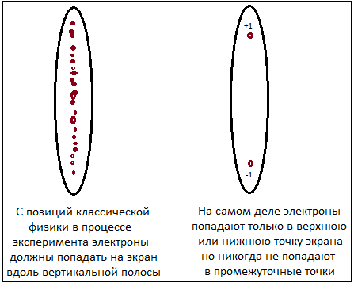

Set the values of the polar and azimuthal angles of the electron either in the GUI in the upper right part of the program,
or using the keys located under the GUI.
Set the values of the polar and azimuthal angles of the Stern-Gerlach device either in the GUI in the upper right part of the program,
or using the keys located under the GUI.
Press the "Measurement" key in the middle part of the program window that starts the measurement process.
In response to the action of this key, the measurement results will appear in the middle part of the program window.
When creating this program, I followed the description of the experiment described in the book
by Leonard Susskind and Art Friedman "Quantum Mechanics: The Theoretical Minimum"
The directions along the Z axis are denoted as Up (u) and Down (d).
The directions along the X axis are denoted as Right (r) and Left (l).
The directions along the Y axis are denoted as Forward (f) and Back (b).
In the book "Quantum Mechanics: The Theoretical Minimum" the directions along the Y axis in this book
are designated "i" - input and "o" - output. In order not to confuse "o" and "i" with the zero symbol 0
and the imaginary unit symbol i in the future, both of these designations have been changed.
Instead of the "i" symbol, the "f" - Forward symbol was adopted, and instead of the "o" symbol, the "b" - Back symbol was adopted
Sphere rotation - left mouse button drag
Sphere size - middle mouse button drag, or mousewheel
Sphere movement on screen - right mouse button drag
Электроны обладают собственным магнитным моментом, который носит название спин.
В 1922 году немецкие физики Отто Штерн и Вальтер Герлах проделали эксперимент который стал одним из основных
в становлении новой науки - квантовой механики.
Совершенно неожиданно в результате этого опыта оказалось, что спин квантуется. Попросту говоря спин может принимать
только одно из двух возможных значений.
Суть опыта в самом кратком изложении заключается в следующем. Пучок электронов выходит из источника и проходит
через неоднородное магнитное поле.
Магнитное поле создается между двумя магнитными полюсами, один из которых плоский, а другой – сильно заостренный.
В результате напряженность магнитного поля возрастает у острого полюса и уменьшается у плоского.
Если предположить, что магнитные моменты электронов ориентированы хаотично,
то тогда на расположенным по направлению движения электронов экране должна проявиться размытая вертикальная полоса
на которой расположатся попавшие на экран электроны.
Исходя из здравого смысла мы должны были ожидать именно такого результата при проведении опыта.
Но вместо размытой вертикальной полосы, на экране отображаются два пятна.
Все электроны разделились строго на два пучка. Верхний пучок
соответствует электронам с проекцией спина +1, нижний – электронам с проекцией спина равной –1.
Более точно +ℏ/2 и -ℏ/2 (ℏ-постоянная Планка) - но для построения программы визуализации
прибора Штерна-Герлаха для простоты примем их равными +1 и -1. Принципиально от этого ничего не изменится.
Эксперимент свидетельствует в пользу того, что магнитные моменты электронов вдоль выделенного направления принимают лишь
два определённых значения. На приведенном рисунке эти значения обозначены символами "+1" и "-1".

Повернем прибор Штерна-Герлаха на некоторый угол относительно первоначального направления. Как ни странно
вдоль любой произвольно ориентированной в пространстве оси результат будет одним и тем же.
Электроны всегда разделяются строго на два пучка: верхний, с проекцией спина +1, и нижний, с проекцией спина –1.
Эксперимент Штерна-Герлаха является одним из самых важных в квантовой механике. Основываясь на результатах этого
эксперимента можно понять как работает математика описывающая спин электрона. Устройство с помощью которого
можно провести этот эксперимент будем в дальнейшем называть прибором Штерна-Герлаха или просто прибором.
Прибор Штерна-Герлаха сейчас иногда используется для демонстрации соответствующих опытов при обучении студентов.
На приведенной фотографии показан вид одного такого прибора:
Как видно из фотографии прибор достаточно сложен и имеет множество настроек и регистрирующих устройств.
Поэтому для тех, кто не имеет доступа к подобной аппаратуре, была сделана программа которая представляет
собой программную модель прибора Штерна-Герлаха.
Эта программа позволяляет провести эксперимент Штерна-Герлаха со множеством вариантов исходных данных.
С ее помощью можно получить все необходимые сведения на основе которых будет
в следующих разделах подробно пояснено как работает математика спина электрона.
Перейдем к рассмотрению и использованию программной модели прибора позволяющего провести эксперимент Штерна-Герлаха
Окно программы разделено на три части.
В левой части окна в виде 3D-модели находится сам прибор Штерна-Герлаха. Хотя вид 3D-модели совершенно не похож на вид прибора на фотографии, модель позволяет провести все возможные эксперименты с электроном, которые производит физическое устройство. Для того чтобы было удобно производить эти эксперименты интерактивно, прибор представлен в виде шара над поверхностью которого находятся два квадрата с символами N и S. Эти квадраты символически изображают два магнитных полюса показанных на рисунке в начале главы. Если провести прямую линию через центры этих квадратов, то эта прямая задаст направление прибора в пространстве. В модели это направление отображается толстой синей стрелкой.
В самом центре левой части окна расположена 3D-модель электрона сделанная в виде небольшого шара. Эта модель имеет зеленоватый оттенок. Из центра электрона выходит зеленая стрелка показывающая направление его спина в пространстве.
Направления осей X, Y и Z и названия Up (u), Down (d),
Right (r) и Left (l), которые можно увидеть на экране, взяты в соответствии с направлениями
и названиями приятыми в книге Леонарда Сасскинда и Арта Фридмана "Квантовая механика. Теоретический минимум".
В дальнейшем эта книга будет часто упоминаться и поэтому будем ее сокращенно называть КМ-ТМ.
Однако, следует иметь в виду, что направления вдоль оси Y в этой книге обозначены "i" - input
и "o" - output. Для того чтобы в дальнейшем не путать o и i с символом нуля
и символом мнимой единицы i оба этих обозначения были изменены.
Вместо символа "i" был принят символ "f" - Forward, а вместо символа "o"
был принят символ "b" - Back
.
Таким образом в дальнейшем будем использовать следующие обозначения:
Направления вдоль оси Z обозначены как Up (u) и Down (d).
Направления вдоль оси X обозначены как Right (r) и Left (l).
Направления вдоль оси Y обозначены как Forward (f) и Back (b).
Прграмма предусматривает возможность задания азимутальных углов спина и прибора в пределах от 0° до 720°. Полярный угол спина и прибора можно изменять в диапазоне 0° - 180°.
Значения полярного и азимутального углов как спина электрона, так и прибора Ш-Г, можно задать в панели задания исходных данных - GUI. Панель GUI показана на следующем рисунке:
Ячейки панели GUI используемые для прямого ввода значений углов также полезно использовать
для текущего просмотра значений этих углов при работе с данной программой.
Эти ячейки всегда отображают актуальные значения полярного и азимутального углов спина и прибора.
Дополнительно предусмотрена возможность задания наиболее часто используемых значений углов спина и прибора при помощи ряда кнопок расположенных под панелью GUI.
Для лучшего обзора сцены все 3D-объекты расположенное в левой части окна (прибор и электрон) можно вращать при помощи мыши. При этом должна быть нажата левая клавиша мыши.
Если нажата правая клавиша мыши, то объекты можно перемещать по экрану. Также перемещать объекты можно при помощи клавиш вверх, вниз, влево и вправо клавиатуры. При этом курсор должен находиться в соответствующей части экрана.
Вращение колесика мыши позволяет увеличивать или уменьшать размер 3D-объектов на экране.
В самой верхней части средней части окна программы расположена большая кнопка с надписью на ней Measurement. Данная кнопка предназначена для получения результатов измерения. Получившеиеся результаты отображаютя также в средней части окна программы непосредственно под кнопкой Measurement.
Последовательность действий при проведении измерений следующая:
1). Прежде всего производится действие имеющее название приготовление спина
Это действие осуществляет задание полярного угла (угол наклона) и азимута электрона. Физически приготовление спина
означает установку его в полностью определенное состояние в пространстве.
В процессе приготовления спина в правой части окна либо при помощи GUI, либо при помощи
кнопок устанавливается значения полярного и азимутального углов спина электрона. Эти значения отображаются
под кнопкой Measurement и в ячейках прямого ввода GUI (смотри рисунок приведенный выше).
Зеленая стрелка в левой части окна после установки поворачивается в положение заданное полярным
и азимутальным углами спина электрона.
2). В правой части окна либо при помощи GUI, либо при помощи кнопок устанавливается значения полярного и азимутального углов прибора Штерна-Герлаха. Эти значения отображаются под кнопкой Measurement и в ячейках прямого ввода GUI (смотри рисунок прведенный выше). Синяя стрелка в левой части окна после установки поворачивается в положение заданное полярным и азимутальным углами прибора Штерна-Герлаха.
3). Производится нажатие кнопки Measurement. Сразу же после нажатия запускается процесс измерения, который длится примерно 2 секунды. На это время в направлении определяемом синей стрелкой появляется столбик символизирующий процесс измерения. Одновременно в правой части окна на две секунды появляется текст - "Statistical spin measurement" После окончания процесс измерения ось спина (ось синей стрелки) переходит в новое положение. Ось спина теперь совпадает с осью прибора. Причем направление зеленой стрелки может совпадать с направлением синей стрелки, а может быть и противоположным направлению синей стрелки. Но, следует подчеркнуть, что в любом из этих двух случаев ось зеленой стрелки устанавливается вдоль оси синей стрелки - то есть вдоль оси прибора Ш-Г. Иными словами после измерения направление спина задается направлением оси прибора. Хотя при этом может иметь одно из двух противоположных направлений.
4). В ответ на окончание процесса измерения в средней части окна появляются результаты измерения, которые могут выглядеть например так:Проведем несколько кспериментов с моделью прибора Штерна-Герлаха. Результаты этих экспериментов в дальнейшем позволят нам понять как работает математика при описании спина электрона. При проведении экспериментов я во многом опирался на содержание ранее упоминавшейся книги КМ-ТМ. Очень желательно параллельно с проведением экспериментов с программной моделью прибора читать Лекцию 1 из этой книги.
Эксперимент 1. Произведем следующие предварительные действия по приготовлению спина и установке углов прибора:
Приготовление спина
Азимутальный угол спина(φspin) установим равным 0°.
Полярный угол спина (θspin) установим равным 0°.
Установка углов прибора
Азимутальный угол прибора φdevice установим равным 0°.
Полярный угол прибора θdevice установим равными 0°.
Нажмем кнопку Measurement.
Получим пезультат σ = +1. Еще раз нажмем кнопку Measurement. Так как приготовленное состояние спина
не изменилось, то снова получим результат σ = +1. Если теперь нажимать кнопку Measurement сколько угодно раз
то все равно получим тот же самый результат.
Оставим спин в этом же прготовленном состоянии (θspin = 0° и φspin = 0°)
но перевернем прибор установив θdevice = 180° и φdevice = 0°.
То что прибор перевернут показывает изменение направления синей стрелки на противоположное. Нажмем кнопку Measurement.
Получим пезультат σ = -1. Мы видим, что переворачивание прибора меняет σ = +1 на σ = -1. Такими же действиями можно
поменять σ = -1 на σ = +1. Как сказано в книге КМ-ТМ объяснение состоит в том, что прибор измеряет компоненту
спина вдоль выделенной в приборе оси. Поэтому можно предположить, что σ представляет собой вектор и имеет поэтому
скорее всего три компоненты σx, σy и σz.
Обратите внимание на то, что после измерения в процессе которого получено значение σ = +1, значения углов в GUI
совпадают со значениями углов перед началом процесса измерения.
Причем θspin = θdevice = 0°
В случае когда после измерения получено значение σ = -1 значения углов в GUI
снова совпадают со значениями углов перед началом процесса измерения.
Но в этом случае θspin и θdevice имеют противоположные значения:
θdevice = 180° а значение полярного угла спина (θspin = 0°)
оказалось противоположным значению угла накона прибора. Если теперь опять нажать кнопку Measurement
то получим тот же самый результат. Таким образом снова подтвердился тот факт, что повторные измерения произведенные
сразу после первого измерения, не меняют результата если перед повторным измерением не менять ориентацию прибора.
Перейдем к установке углов прибора:
Азимутальный угол прибора φdevice установим равным 0°.
Полярный угол прибора θdevice установим равными 90°. Тем самым
мы хотим измерить значение спина вдоль оси x.
Нажмем кнопку Measurement.
Здесь следует сделать отступление и сказать, что в данной программе подразумевается под измерением. При нажати кнопки Measurement запускается процесс измерения и в левой части окна высвечивается предложение "Statistical spin measurement". Что подразумевается под статистическим измерением? Если провести серию единичных измерений спина то получится последовательность значений из +1 и -1. Под статистичечким измерением мы подразумеваем усреднение этих значений при проведении множества единичных измерений. При каждом единичном измерении приготовляется спин, затем поворачиватся на заданный угол прибор и фиксируется результат измерения. Затем снова приготовляется спин, поворачиватся на заданный угол прибор и фиксируется новый результат измерения. И так далее. В заключение подсчитывается средний результат - складываются все +1 и -1 и сумма делится на количество единичных измерений. В программе для того чтобы заострить внимание на статистическом процессе измерения результат высвечивается не сразу, а с задержкой примерно в 2 секунды. Эта задержка имитирует тот факт что проводится не одно, а множество измерений. В данной программе однако не проводится множество измерений, а просто для получения статистического результата используются некоторые вычисления. Но полученный при этих вычислениях статистический результат не отличается от статистического результата полученного при проведении серии единичных измерений.
Эксперимент 3.
Приготовим спин по z (так же как и в эксперименте 1) и повернем прибор на произвольный угол.
Возьмем в качестве этого произвольного угла θdevice = 60°. По азимуту для простоты
зададим угол φdevice = 0°. Нажмем кнопку Measurement и увидим результат.
Так как измерение статистическое то в средней части окна пограммы мы увидим, что значение спина равно 0.5.
Не забываем, что это среднее значение величины спина и поэтому оно обозначено специальным символом 〈σ〉. Как
можно видеть значение спина +1 зарегестрировано в 75% всех единичных измерений, а значение равное -1 зарегестрировано в 25%.
Особое внимание следует обратить на тот факт, что среднее значение спина равное 0.5. Значение 0.5 - это величина косинуса
угла прибора θdevice = 60°.
Если в этом эксперименте угол прибора установить θdevice = 30° то среднее значение
будет равно 〈σ〉 = 0.866. Снова отметим факт, что cos(θdevice) = 0.866 = 〈σ〉.
А если установим угол прибора равным θdevice = 160° то получим 〈σ〉 = -0.94 и
cos(θdevice) = -0.94 = 〈σ〉.
Значения углов прибора θdevice = 60°, θdevice = 30° и
θdevice = 160° в данном случае (так как приготовленное значение угла спина
θspin = 0° во всех трех случаях) следует рассматривать как значение
угла между направлением осей спина и прибора.
Замечание
Не забудьте, что после нажатия кнопки Measurement направление оси прибора и направление оси спина совпадают.
Но в поле, обозначенном как "Angle between spin and device", несмотря на это выводится соответствующий угол.
Можно выбрать любое направление в пространстве. Пусть это будет напрвление определяемое единичным вектором m. Приготовим вдоль этого направление спин таким образом, чтобы прибор дал значение +1. Повернем прибор на угол θ так, чтобы он не воздействовал на спин (временно будем просто назовать углом θ угол между направлением осей спина и прибора). Направление оси прибора задаст единичный вектор n. Теперь проведем измерение значения спина. Это значение будет равно либо +1 либо -1.
Проведем серию подобных измерениий. В результате каждого отдельного измерения получим величину спина снова равную либо +1 либо -1. Но среднее значение спина по сумме всех измерений даст величину равную скалярному произведению вектора m на вектор n. Как известно скалярное произведение двух векторов единичной длины равно косинусу угла между этими векторами и, следовательно, 〈σ〉 = cosθ.Если бы спин представлял собой феномен из классической физики, то при любом единичном измерении мы всегда бы получали значение σ = cosθ. Но в квантовой физике при каждом единичном измерении спина получаем только одно из двух значений - либо +1 либо -1. И поэтому в квантовой физике только проведение множества единичных измерений дает значение 〈σ〉 = cosθ, которое является средним этих измерений.
Если проделать эксперименты для самых различных углах θ можно увидеть, что максимальная неопределенность возникает при взаимно перпендикулярном расположении оси приготовленного спина и оси прибора. Наоборот при полном совпадении оси приготовленного спина с осью прибора неопределенность полностью исчезает. Это в точности совпадает с математическим выражением 〈σ〉 = cosθ. Причем прибор всегда измеряет величину спина только вдоль своей оси и это значение при каждом отдельном измерении равно только одному из двух значений +1 или -1. Одновременно замерить спин по двум осям принципиально невозможно с помощью любого устройства или прибора.
Обратим внимание на глубокий смысл выражения 〈σ〉 = cosθ.
Вспомним как вычисляется среднее значение в математике.
Представим себе подбрасывание монеты и вероятность получения орла или решки. Обозначим орел как +1, а решку
как -1. Очевидно что среднее значение мы можем найти сложив все +1 и -1 и разделив полученную сумму на
количество подбрасываний монеты (количество измерений). Среднее значение расположится в пределах от -1 до +1.
Но можно и по другому вычислить среднее значение. Предположим, что мы имеем идеальную монету у которой
вероятность выпадения +1 равно 0.5 или 50%, а вероятность выпадения -1 также равно 0.5 или 50%.
Тогда среднее значение выпавшей величины можно найти по следующей формуле:
(+1)×(вероятность выпадения +1) + (-1)×(вероятность выпадения -1) = (+1) × 0.5 + (-1) × 0.5 = 0
Иными словами среднее значение равно 0. Что и следовало ожидать от идеальной монеты.
Если имеем монету со смещенным центром тяжести с вероятностями +0.3 и -0.7 соответственно то получим
(+1)×(вероятность выпадения +1) + (-1)×(вероятность выпадения -1) = (+1) × 0.3 + (-1) × 0.7 = -0.4
Среднее значение выпавшей величины равно -0.4, что говорит о более частом выпадении решки.
Вернемся к выражению 〈σ〉 = cosθ. В элементарной математике есть замечательная формула:
cos(θ) = cos2(θ/2) - sin2(θ/2) (*)
Эту формулу совершенно нетрудно вывести используя знания школьной тригонометрии, но можно найти и саму формулу и ее вывод
в учебном пособии Тригонометрия
на странице 108. Используя эту формулу мы можем записать выражение 〈σ〉 = cosθ в следующем виде:
〈σ〉 = (+1)·cos2(θ/2) + (-1)·sin2(θ/2) (**)
Таким образом вероятность того, что в результате измерения будет получена +1 равна cos2(θ/2),
вероятность получения -1 будет равной sin2(θ/2).
Из приведенной формулы видно, что среднее значение величины спина оказалось выраженным через квадраты
синуса и косинуса половинных углов θ/2.
На следующем рисунке приведены графики всех функций входящих в формулу:
Забегая вперед приведем без вывода одну из основных формул квантовой механики. Это формула для вектора квантового состояния:
|ψ〉 = cos(θ/2)·|0〉 + sin(θ/2)·eiφ·|1〉
Если положить в этой формуле φ = 0, то получим следующий вид этой формулы:
|ψ〉 = cos(θ/2)·|0〉 + sin(θ/2)·|1〉 (***)
Чтобы лучше понять обозначения последних двух формул приведем рисунок на которй показана так называемая
сфера Блоха. Эту сферу мы подробно разберем в одном из следующих разделов, а пока просто посмотрите
на то как на сфере показаны вектор Блоха S, углы θ и φ, задающие положение его на сфере,
а также квантовые состояния |0〉 и |1〉.
Каждому вектору Блоха,
который расположен на сфере соответствует вектор квантового состояния |ψ〉.
В квантовой механике существует следующее правило:
Квадрат абсолютного значения амплитуды вероятности есть вероятность осуществления события, описываемого этой
амплитудой.
Для формулы помеченной (***) квадраты амплитуд вероятности равны cos2(θ/2) и sin2(θ/2).
Что такое амплитуда вероятности мы разберем также позднее, а пока
сравнивая формулы (**) и (***) можно увидеть некоторую аналогию между ними. Также следует обратить
внимание на приведенные выше графики функций cos(θ/2), sin(θ/2) и квадраты этих функций. Между этими графиками, формулами и результатами
эксперимента Штерна-Герлаха
〈σ〉 = cosθ
прослеживается совершенно однозначная связь.
В главе 4 будет математически показано, что если спин подготовлен в направлении m и вектор |μ1〉 является собственным вектором в
в этом направлении, а измерение спина производится в направлении n (повернутого относительно предыдущего направления на угол α),
и для него собственным вектором является вектор |λ1〉, то вероятность перехода из состояния заданного вектором m
в состояние заданное вектором n определяется формулой
P = |〈λ1|μ1〉|2 = 〈μ1|λ1〉〈λ1|μ1〉 = (1 + cos(α))/2 = cos2(α/2)
В заключение еще раз рассмотрим ключевые моменты эксперимента Штерна-Герлаха.
Приготовим спин. Пусть это приготовление будет осуществлено вдоль оси z (но с тем же успехом можем взять и любое другое направление).
Пусть приготовленное состояние спина равно +1. Повернем прибор на произвольный угол и проведем измерение спина вдоль его оси.
Предположим что состояние спина стало равно -1. Сразу же проведем еще одно измерение не меняя ориентацию прибора.
Измерение снова даст значение -1. Если проводить сколько угодно измерений не меняя ориентацию прибора результат
всегда останется равным -1.
А теперь снова вернем прибор в первоначальное состояние - когда он располагался вдоль оси z. Ранее приготовленное состояние спина вдоль этой оси было равно +1. Проведем измерение спина. Обнаружим, что результат измерения вдоль оси z может измениться на -1. Но может как и прежде принять значение +1. Вероятностный закон определит одно из этих двух значений спина. Следуя законам классической физики такого быть не может - ведь после первоначального поворота прибора мы с точки зрения классической физики можем считать, что не изменяли приготовленное состояние спина - мы всего лишь произвели его измерение вдоль новой оси и ничего со спином не делали. А теперь просто снова измеряем спин вдоль оси z.
Оказалось, что простое измерение (измерение можно также назвать словом наблюдение) меняет состояние спина. После первоначального поворота приготовленного спина и его измерения, спин (как ни странно) в прцессе измерения принял новое (измеренное прибором) значение и "забыл" свое прежнее значение. Получается, что фактически путем этого измерения мы приготовили спин в новом состоянии и возвращение прибора в исходное положение вдоль оси z и, сразу следующее за возвращением положения прибора измерение спина, может дать значения как +1, так и -1. Вероятность появления соответствующего значения будет определяться углом поворота, тепреь уже назад, к направлению вдоль оси z в то положение прибора, с которого начался эксперимент. В данном случае угол поворота прибора от исходного его направления и к исходному направлению прибора один и тот же. Поэтому и вероятности появления +1 и -1 будут одинаковыми для случаев поворотов "вперед" и "назад" в этих двух случаях. Можно сделать вывод, что любое измерение спина или наблюдение за его значением меняет состояние спина. "Безобидных" измерений/наблюдений в квантовой физике не бывает.
Если произведено измерение спина и получен конкретный результат, то сам спин принял значение полученное в результате измерения, и он уже не помнит свое прежнее состояние и восстановить это состояние невозможно. Предшествующая измерению информация теряется.
- - - - - - - - - - - - - - - - - - - - - - - - - - - - - - - - - - - - - - - - -Рекомендую видеолекции на youtube автора под всевдонимом lightcone по квантовой механике Элементарное введение в квантовую механику. Ему удалось понятно и просто объяснить сложные вещи. На мой взгляд, из тех кто пишет книги на русском языке (или читает лекции,) он является одним лучших кто объясняет смысл этой сложной науки. Можно также посмотреть его видеолекции по теории групп Элементарное введение в теорию групп, так как современная математика квантовой механики тесно связана с этой теорией.
Ричард Фейнман в своих лекциях по физике в восьмом томе посвященным квантовой механике в главе 3 исключительно подробно рассказывает про эксперимент Штерна-Герлаха, про приготовление квантовых состояний, про последовательное соединение приборов Штерна-Герлаха и механику квантовой механики. В главе 4 он конкретно рассказывает про спин 1/2.
Интересная статья Василия Янчилина про эксперимент Штерна-Герлаха Почему проекция момента импульса всегда принимает целочисленные значения вдоль любой произвольно ориентированной оси?/.
В книге "Quantum Mechanics: A Paradigms Approach" (автор David H. McIntyre) в главах 1 и 2 про эксперимент Штерна-Герлаха и последовательное соединение приборов Штерна-Герлаха (с поясняющими несложными формулами) рассказано очень понятно. Английский язык в книге довольно простой. К тому же много поясняющих рисунков, которые помогают понять смысл и без полного перевода текста. Книгу легко найти в интернете.